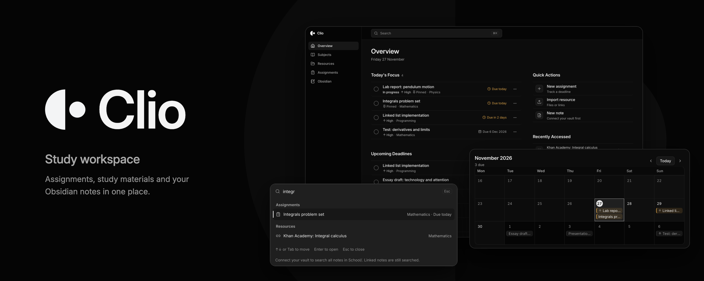

Clio
Study workspace that brings learning materials, assignments, and an Obsidian vault together.

Built for my own school work: one place for deadlines, study materials, and notes, without replacing the tools I already use. Obsidian stays the source of truth for notes, and Clio adds the organisation around them. Designed and directed by me, built with the assistance of Claude Code.
Key features
- Overview with today's focus, upcoming deadlines, and recently opened items
- Assignments with deadlines, priorities, and progress, in agenda or calendar view
- Resource library for files and links, organised by subject and topic
- Works with an existing local Obsidian vault — browse, read, and create notes
- Installable PWA with keyboard shortcuts and a command palette